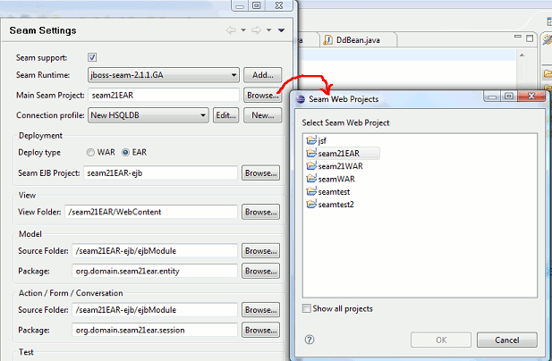
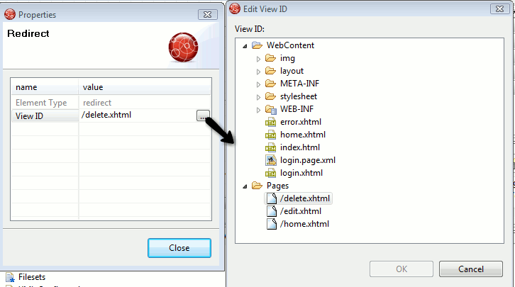

Projects
It is now possible to change the Seam parent project directly in Seam preferences. In earlier versions this was only controllable at project creation time, now it can be changed for existing projects too.

Editors
There is now a preference page for controlling visual look and behavior of the Seam pages editor.

When editing properties of elements that point to view-id's the dialog now lists existing view-id's for quick selection.
